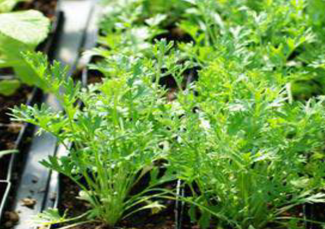

These are plantlets divided from the existing mother plant with complete with complete leaves and rooting system.
- They are used to propagate most pasture grasses and pyrethrum.
- Pyrethrum splits are raised first in nursery and then transplanted to the field.
